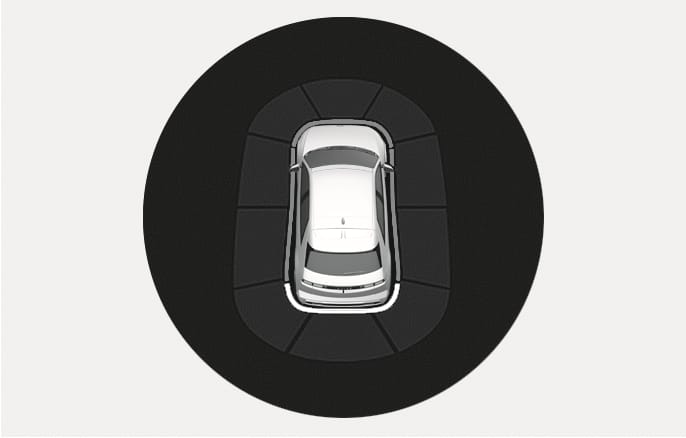

주차 충돌방지 보조 (PCA)
주차 충돌방지 보조는 저속 주행 중 주변 물체 및 보행자가 감지되면 경고 및 제동으로 충돌하지 않도록 도와줍니다.
-
PCA는 Reverse Parking Collision-Avoidance Assist의 약자입니다.
-
주차 충돌방지 보조가 작동하면 클러스터 화면의 차량 이미지 주변에 테두리 선이 표시됩니다.
경고 예시
2C_PCAOnInfo